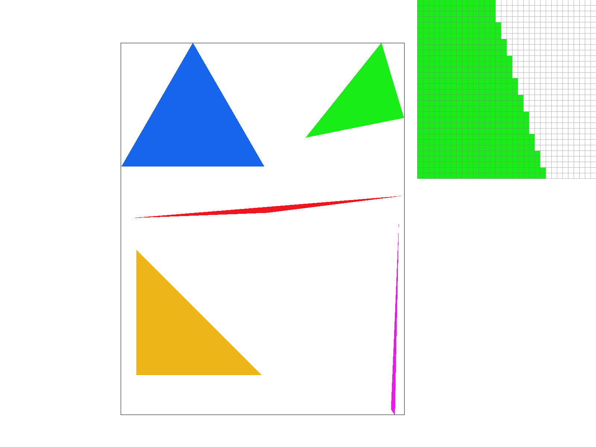
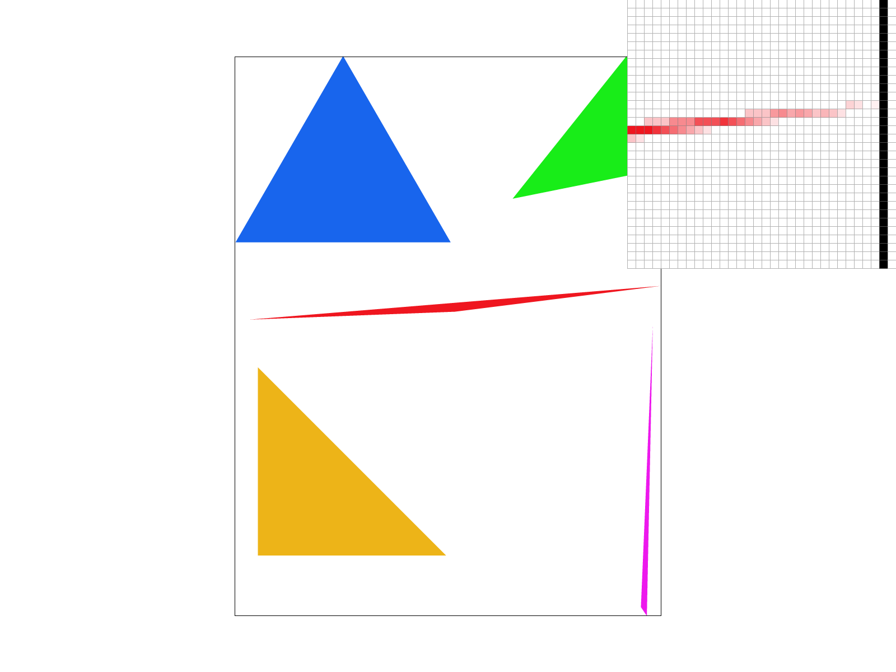
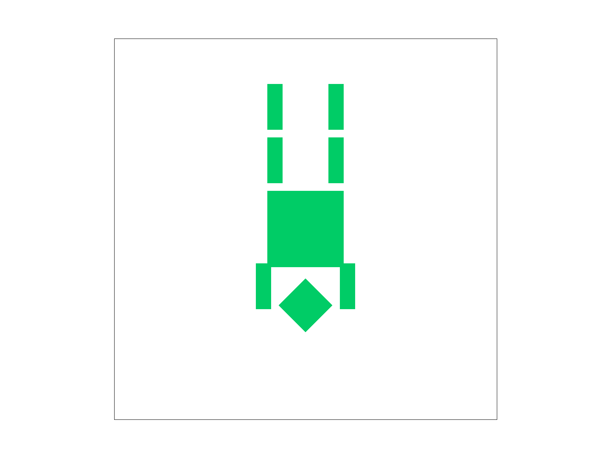

To draw a triangle, I first find its bounding box by taking the smallest and largest \(x\) and \(y\) coordinates of its three corners \((x_0, y_0)\), \((x_1, y_1)\), and \((x_2, y_2)\):
$$\text{min\_x} = \lfloor\min(x_0, x_1, x_2)\rfloor, \quad \text{max\_x} = \lceil\max(x_0, x_1, x_2)\rceil$$ $$\text{min\_y} = \lfloor\min(y_0, y_1, y_2)\rfloor, \quad \text{max\_y} = \lceil\max(y_0, y_1, y_2)\rceil$$
Next, I loop through every pixel center \((x + 0.5, y + 0.5)\) inside this box. For each pixel center, I use the three edge line functions to test if the point sits on the inside of all three edges:
$$L_i(x, y) = -(x - x_i)(y_{i+1} - y_i) + (y - y_i)(x_{i+1} - x_i)$$
If all three edge test results have the same sign (either all \(\ge 0\) or all \(\le 0\)), the pixel center is inside the triangle. Checking both positive and negative signs allows the code to work no matter if the triangle points are given in clockwise or counter-clockwise order. If the pixel center is inside, I call rasterize_point(x, y, color) to fill in the color.
Efficiency Analysis: This algorithm is no worse than checking every sample in the bounding box because it only loops through pixels between \(\text{min\_x}\) to \(\text{max\_x}\) and \(\text{min\_y}\) to \(\text{max\_y}\). It never tests pixels outside of this bounding box area, so it checks the exact minimum rectangle needed. This keeps the runtime bounded tightly to the size of the triangle rather than the whole screen.

svg/basic/test4.svg rendered with default viewing parameters. The pixel inspector (toggle with Z) highlights jaggies along the narrow edge of the red triangle.
Algorithm & Data Structures: Supersampling antialiases high-frequency edges by sampling each pixel at multiple sub-locations and averaging the colors together. To implement this, I updated sample_buffer to hold \(\text{width} \times \text{height} \times \text{sample\_rate}\) color elements. During triangle rasterization, each pixel is divided into a \(\sqrt{\text{sample\_rate}} \times \sqrt{\text{sample\_rate}}\) sub-grid. I test whether each sub-sample point \((x + \frac{i + 0.5}{\sqrt{\text{sample\_rate}}}, y + \frac{j + 0.5}{\sqrt{\text{sample\_rate}}})\) lies inside the triangle and store its color at its unique index in sample_buffer. Finally, in resolve_to_framebuffer(), I average all sub-samples belonging to a pixel to determine its final display color.
Pipeline Modifications:
set_sample_rate() & set_framebuffer_target(): Dynamically resize sample_buffer whenever the window dimensions or sample rate change.clear_buffers(): Clears both the main framebuffer and sample_buffer to white at the start of every frame.fill_pixel(): Fills all sub-samples of a single pixel with the same color so points and lines draw correctly.resolve_to_framebuffer(): Downsamples high-resolution sub-samples into single 8-bit RGB display values by computing their average.Why Supersampling is Useful: Supersampling removes visual jaggies and prevents thin geometric features from disappearing. When a narrow triangle tip barely misses a single pixel center, regular 1x sampling skips the pixel entirely, creating disconnected floating shapes. With 16x supersampling, even if only 2 out of 16 sub-samples fall inside the triangle, the pixel renders as a light red tint instead of disappearing, creating a smooth visual line.

Implementation: I implemented the three 2D transformation functions in src/transforms.cpp using \(3 \times 3\) homogeneous coordinate matrices. The translate(dx, dy) function builds a translation matrix with \(dx\) and \(dy\) in the rightmost column, scale(sx, sy) scales the diagonal terms, and rotate(deg) converts input degrees to radians (\(rad = deg \times \frac{\pi}{180}\)) to form the 2D rotation matrix (\(\cos\theta\) and \(\sin\theta\)).
Custom Robot Pose: In my_robot.svg, I designed an upside-down handstanding cubeman performing a yoga headstand/handstand pose. To achieve this, I applied a rotate(180) transformation to the primary root group, turning the entire cubeman upside down. I rotated both arm groups by \(90^\circ\) and \(-90^\circ\) respectively so they plant firmly on the ground to support the torso, while extending both legs straight up into the air. I also updated the entire color palette to a vibrant emerald green (#00CC66).

my_robot.svg)code code code